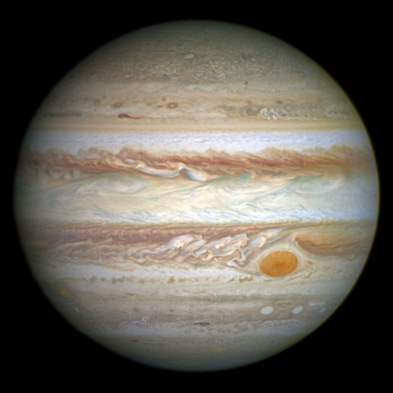

Sistema Solar
Os planetas do Sistema Solar formam um agrupamento de oito corpos celestes que orbitam o Sol: Mercúrio, Vênus Terra, Marte, Júpiter, Saturno, Urano e Netuno. São classificados em planetas rochosos (formados predominantemente por rochas e minerais) e em planetas gasosos (constituídos por gases diversos). Até tempos atrás, mais precisamente 2006, o Sistema Solar era composto por nove planetas, porém Plutão foi reclassificado como planeta-anão no referido ano.

Resumo sobre planetas do Sistema Solar
Mercúrio
O planeta Mercúrio é o mais próximo do Sol. A sua principal característica são as elevadas temperaturas, provocadas especialmente pela sua proximidade com a estrela solar assim como pela ausência de uma camada de gases completa, como a atmosfera terrestre. Mercúrio não apresenta satélites naturais e possui uma superfície marcada por grandes crateras.
Vênus

O planeta Vênus, sendo o segundo em ordem de classificação a partir do Sol, é o mais quente do Sistema Solar. Ele possui características de tamanho, diâmetro e massa muito semelhantes às da Terra, mas não possui nenhum vestígio de formas de vida. Sua formação, assim como a da Terra, é composta por rochas diversas, com destaque para silicatos e basaltos.
Terra

O planeta Terra é o único do Sistema Solar em que há presença confirmada de formas de vida. Tal fato é possível mediante questões físicas, com a disponibilidade de água e a presença de uma atmosfera bastante desenvolvida. A Terra é um planeta rochoso, formado por silicatos e basaltos, além de apresentar diversos recursos minerais. A Lua é seu único satélite natural.
Marte

Marte, conhecido como Planeta Vermelho, possui características estruturais bastante semelhantes às da Terra. Apresenta uma superfície marcada por grandes crateras e pela ocorrência de diversos depósitos minerais. Marte possui dois satélites naturais, e é um dos planetas mais estudados pelas ciências astronômicas.
Júpiter
Júpiter é formado basicamente por gases e é classificado então como planeta gasoso. Sendo o maior em tamanho do Sistema Solar, é conhecido como Gigante Gasoso. Esse astro possui inúmeros satélites naturais que o orbitam. Assim como os outros planetas gasosos, em Júpiter há um sistema de anéis, de pequena dimensão.
Saturno

O planeta Saturno é muito conhecido em razão dos seus anéis. Ele é o segundo maior em extensão territorial e é formado predominantemente por gases. Seu complexo sistema de anéis é o mais desenvolvido entre os planetas gasosos. As temperaturas em Saturno, assim como nos outros planetas gasosos, são bastante baixas. Ele possui diversos satélites naturais.
Urano
O planeta Urano é formado principalmente por gases. Ele é bastante desconhecido pela ciência. Há em Urano, assim como nos outros planetas gasosos, um sistema de anéis. Também possui diversos satélites naturais. A luminosidade solar chega de forma bastante diminuta à sua superfície. Esse planeta é conhecido por seu tom azulado devido aos gases da sua atmosfera.
Netuno

Netuno é o mais distante do Sol entre todos os planetas do Sistema Solar. Sua estrutura é formada predominantemente por gases. Esse planeta possui um complexo sistema de satélites e também tem anéis que o circundam. Suas temperaturas são extremamente baixas. Também possui baixa luminosidade e é pouco conhecido pela ciência.
Tipos de Planetas
Os oito planetas do Sistema Solar são divididos conforme a sua formação e a sua constituição. Eles são classificados em dois grandes grupos:
Movimento dos planetas
Os planetas do Sistema Solar realizam diversos movimentos, seja em torno do seu próprio eixo, seja em torno do Sol. Os dois principais movimentos planetários são: